The goal of this study is to predict the production quantities for an apperal manufacturer. We have run a multinomial OLS regression, random forest model and a gradient boosting model (GBM) in order to predict the production quantities. We have done data cleaning, visualizations feature engineering, scaling in order to create an appropriate dataset for model training. We used root mean squared error (RMSE) of the test set in order to decide the best model. The GBM model provides the least RMSE thus proving to be the most appropriate model.
The goal is to forecast the production. We are given two data sources which are the “plan” folder and the “production quantities” folder. There is no specified forecasting horizon specified therefore it is not necessary to forecast forward. As the problem suggests, this is a supervised learning problem as we will likely have labeled datasets for us to learn patterns and forecast (Alpaydin, 2020). This is also likely going to be a regression problem. The Y variable is going to be a continuous variable and not a categorical variable. We have been given the definition of few X variables but we have not been specified a Y variable.
We have already extracted the datasets into our relevant folder. once extracted, we can observe its characteristics.
setwd("C:\\praveen\\mba help\\DataSet-2021\\Production Quantities")
files<-list.files()
# number of files to be read
length(files)## [1] 119# What do the names look like?
print(files[1:20])## [1] "~$PR 05.01.2018 - D051.xlsx" "PR 01.02.2018 - D051.xlsx" "PR 01.03.2018 - D051.xlsx"
## [4] "PR 01.04.2018 - D051.xlsx" "PR 01.05.2018 - D051.xlsx" "PR 01.06.2018 - D051.xlsx"
## [7] "PR 01.08.2018 - D051.xlsx" "PR 01.09.2018 - D051.xlsx" "PR 01.10.2018 - D051.xlsx"
## [10] "PR 01.11.2018 - D051.xlsx" "PR 01.12.2018 - D051.xlsx" "PR 01.13.2018 - D051.xlsx"
## [13] "PR 01.15.2018 - D051.xlsx" "PR 01.16.2018 - D051.xlsx" "PR 01.17.2018 - D051.xlsx"
## [16] "PR 01.18.2018 - D051.xlsx" "PR 01.19.2018 - D051.xlsx" "PR 01.20.2018 - D051.xlsx"
## [19] "PR 01.22.2018 - D051.xlsx" "PR 01.23.2018 - D051.xlsx"# information about a file. this generally provides the file name, size, and dates modified. lets look at the first 3 files and their information
file.info(files[3])## size isdir mode mtime ctime atime exe
## PR 01.03.2018 - D051.xlsx 39186 FALSE 666 2021-09-04 22:46:21 2018-05-07 18:14:04 2022-04-17 20:38:05 nofile1<-read_xlsx(files[3],skip=1)
# what does the actual file look like? Lets open a file and see.
head(file1)## # A tibble: 6 x 25
## Date Section PE `Work Center` Module `Planned/Projec~ `Present Employ~ `Absent Employe~
## <dttm> <chr> <chr> <chr> <chr> <dbl> <dbl> <dbl>
## 1 2018-01-03 00:00:00 PDC SE~ ? 0252-A 0252-A 0 9 1
## 2 2018-01-03 00:00:00 PDC SE~ ? 0252-A 0252-A 0 0 0
## 3 2018-01-03 00:00:00 PDC SE~ ? 0252-A 0252-A 0 0 0
## 4 2018-01-03 00:00:00 PDC SE~ ? 0253-A 0253-A 0 5 1
## 5 2018-01-03 00:00:00 PDC SE~ ? 0253-A 0253-A 0 0 0
## 6 2018-01-03 00:00:00 PDC SE~ ? 0311-A 0311-A 0 14 2
## # ... with 17 more variables: `No Of Hours Per Day` <dbl>, `Worked Hours` <dbl>, `Daily Down Time Hours` <dbl>, `Impacted
## # DownTime Hours` <dbl>, `Daily Performance` <dbl>, Customer <chr>, `Style Code` <chr>, `Style Description` <chr>,
## # SO <chr>, LI <dbl>, `FG Reference` <chr>, `SO/LI Worked Hours` <dbl>, Efficiency <dbl>, `Time Slot` <lgl>,
## # Total <dbl>, SMV <dbl>, `Standard Hours` <dbl>#examine the structure of a dataset
str(file1)## tibble [122 x 25] (S3: tbl_df/tbl/data.frame)
## $ Date : POSIXct[1:122], format: "2018-01-03" "2018-01-03" "2018-01-03" "2018-01-03" ...
## $ Section : chr [1:122] "PDC SECTION" "PDC SECTION" "PDC SECTION" "PDC SECTION" ...
## $ PE : chr [1:122] "?" "?" "?" "?" ...
## $ Work Center : chr [1:122] "0252-A" "0252-A" "0252-A" "0253-A" ...
## $ Module : chr [1:122] "0252-A" "0252-A" "0252-A" "0253-A" ...
## $ Planned/Projected Efficiency: num [1:122] 0 0 0 0 0 0 0 0 0 0 ...
## $ Present Employees : num [1:122] 9 0 0 5 0 14 19 21 0 18 ...
## $ Absent Employees : num [1:122] 1 0 0 1 0 2 0 4 0 1 ...
## $ No Of Hours Per Day : num [1:122] 11 0 0 11 0 11 11 11 0 11 ...
## $ Worked Hours : num [1:122] 99 0 0 55 0 ...
## $ Daily Down Time Hours : num [1:122] 0 0 0 0 0 0 0 0 0 0 ...
## $ Impacted DownTime Hours : num [1:122] 0 0 0 0 0 0 0 0 0 0 ...
## $ Daily Performance : num [1:122] 29.4 29.4 29.4 0 0 ...
## $ Customer : chr [1:122] "Amante" "Amante" "Amante" "Shade & Shore" ...
## $ Style Code : chr [1:122] "DEV002-T" "DEV002-T" "DEV002-T" "SHB0179" ...
## $ Style Description : chr [1:122] "DEV002-T" "DEV002-T" "DEV002-T" "PERFECT SUNRISE BOTTOM" ...
## $ SO : chr [1:122] "D000069836" "D000069837" "D000069837" "2000015636" ...
## $ LI : num [1:122] 40 50 60 70 170 40 50 10 20 10 ...
## $ FG Reference : chr [1:122] "FDEV002-T-GLB" "FDEV002-T-GLB" "FDEV002-T-MIN" "FSHB0179-206-ZR" ...
## $ SO/LI Worked Hours : num [1:122] 59.1 20 20 27.5 27.5 ...
## $ Efficiency : num [1:122] 29.4 29.4 29.4 0 0 ...
## $ Time Slot : logi [1:122] NA NA NA NA NA NA ...
## $ Total : num [1:122] 0 0 0 0 0 0 0 0 0 0 ...
## $ SMV : num [1:122] 13.5 13.5 13.5 0 0 ...
## $ Standard Hours : num [1:122] 0 0 0 0 0 0 0 0 0 0 ...What we have done is we have listed all the files in the folder. We wanted to see what the data names look like. So we have printed the dataset names. Then we have read a random excel file in the folder. We have printed some of the production datasets. There are few insights to be gained.
These insights suggest that there will be extensive work on preparing the datasets for analysis. Lets look at what the planning datasets look like. Once we look at the production dataset, we dont come across any field on the production. This essentially renders the production dataset useless for our analysis as it does not contain a Y variable.
names(file1)## [1] "Date" "Section" "PE"
## [4] "Work Center" "Module" "Planned/Projected Efficiency"
## [7] "Present Employees" "Absent Employees" "No Of Hours Per Day"
## [10] "Worked Hours" "Daily Down Time Hours" "Impacted DownTime Hours"
## [13] "Daily Performance" "Customer" "Style Code"
## [16] "Style Description" "SO" "LI"
## [19] "FG Reference" "SO/LI Worked Hours" "Efficiency"
## [22] "Time Slot" "Total" "SMV"
## [25] "Standard Hours"# the production dataset does not contain any column to be used as the Y variable.We will print to see what the planning data look like too. Again we will examine how many planning data we have, what the file properties look like and what a typical dataset looks like
setwd("C:\\praveen\\mba help\\DataSet-2021\\Plan")
files<-list.files()
# number of files to be read
length(files)## [1] 49# What do the names look like?
print(files[1:20])## [1] "~$LC Sec 1 - 01.02 - 01.12.xlsx" "LC Sec 1 - 01.02 - 01.12.xlsx" "LC Sec 1 - 01.15 - 01.26.xlsx"
## [4] "LC Sec 1 - 01.29 - 02.09.xlsx" "LC Sec 1 - 02.12 - 02.24.xlsx" "LC Sec 1 - 02.26 - 03.10.xlsx"
## [7] "LC Sec 1 - 03.12 - 03.24.xlsx" "LC Sec 1 - 03.26 - 03.30.xlsx" "LC Sec 1 - 04.02 - 04.27.xlsx"
## [10] "LC Sec 1 - 05.01 - 05.12.xlsx" "LC Sec 1 - 05.14 - 05.25.xlsx" "LC Sec 1 - 05.30 - 06.13.xlsx"
## [13] "LC Sec 1 - 06.18 - 06.29.xlsx" "LC Sec 2 - 01.02 - 01.12.xlsx" "LC Sec 2 - 01.15 - 01.26.xlsx"
## [16] "LC Sec 2 - 01.29 - 02.09.xlsx" "LC Sec 2 - 02.12 - 02.24.xlsx" "LC Sec 2 - 02.26 - 03.10.xlsx"
## [19] "LC Sec 2 - 03.12 - 03.24.xlsx" "LC Sec 2 - 03.26 - 03.30.xlsx"# information about a file. this generally provides the file name, size, and dates modified.
file.info(files[3])## size isdir mode mtime ctime atime exe
## LC Sec 1 - 01.15 - 01.26.xlsx 75134 FALSE 666 2021-09-04 22:46:22 2021-06-07 18:41:30 2022-04-17 20:38:06 nofile1<-read_xlsx(files[3],skip=2)
# what does the actual file look like?
head(file1)#%>%datatable()## # A tibble: 6 x 20
## Module Material `Customer No` Description `Customer Dept.` Gender `S/O` `L/I` `Order No.` `Order Qty.` Emp. SMV
## <chr> <chr> <chr> <chr> <chr> <chr> <chr> <dbl> <dbl> <dbl> <dbl> <dbl>
## 1 0005-A 7000114~ 100255 AE STRAPPY~ Q9/AERIE- SWIM FL D000~ 50 8000403815 2982 19 14.2
## 2 0005-A 7000114~ 100255 AE STRAPPY~ Q9/AERIE- SWIM FL D000~ 50 8000403815 2982 19 14.2
## 3 0005-A 7000114~ 100255 AE STRAPPY~ Q9/AERIE- SWIM FL D000~ 50 8000403815 2982 19 14.2
## 4 0005-A 7000114~ 100255 AE STRAPPY~ Q9/AERIE- SWIM FL D000~ 50 8000403815 2982 19 14.2
## 5 0005-A 7000114~ 100255 AE STRAPPY~ Q9/AERIE- SWIM FL D000~ 50 8000403815 2982 19 14.2
## 6 0005-A 7000114~ 100255 AE STRAPPY~ Q9/AERIE- SWIM FL D000~ 30 8000345609 1534 19 14.2
## # ... with 8 more variables: Date <dttm>, `Eff. %` <dbl>, Qty. <dbl>, `Cum Qty.` <dbl>, `Standard Hours.` <dbl>,
## # `Cum.Standard Hours.` <dbl>, `Work Hours.` <dbl>, `Cum.Work Hours.` <dbl>#examine the structure of a dataset
str(file1)## tibble [465 x 20] (S3: tbl_df/tbl/data.frame)
## $ Module : chr [1:465] "0005-A" "0005-A" "0005-A" "0005-A" ...
## $ Material : chr [1:465] "7000114971" "7000114971" "7000114971" "7000114971" ...
## $ Customer No : chr [1:465] "100255" "100255" "100255" "100255" ...
## $ Description : chr [1:465] "AE STRAPPY BACK ONE PC BASIC SD SS18" "AE STRAPPY BACK ONE PC BASIC SD SS18" "AE STRAPPY BACK ONE PC BASIC SD SS18" "AE STRAPPY BACK ONE PC BASIC SD SS18" ...
## $ Customer Dept. : chr [1:465] "Q9/AERIE- SWIM" "Q9/AERIE- SWIM" "Q9/AERIE- SWIM" "Q9/AERIE- SWIM" ...
## $ Gender : chr [1:465] "FL" "FL" "FL" "FL" ...
## $ S/O : chr [1:465] "D000072016" "D000072016" "D000072016" "D000072016" ...
## $ L/I : num [1:465] 50 50 50 50 50 30 30 30 60 60 ...
## $ Order No. : num [1:465] 8e+09 8e+09 8e+09 8e+09 8e+09 ...
## $ Order Qty. : num [1:465] 2982 2982 2982 2982 2982 ...
## $ Emp. : num [1:465] 19 19 19 19 19 19 19 19 19 19 ...
## $ SMV : num [1:465] 14.2 14.2 14.2 14.2 14.2 ...
## $ Date : POSIXct[1:465], format: "2018-01-15" "2018-01-16" "2018-01-17" "2018-01-18" ...
## $ Eff. % : num [1:465] 78 78 78 78 78 78 78 78 78 78 ...
## $ Qty. : num [1:465] 687 687 562 562 214 ...
## $ Cum Qty. : num [1:465] 957 1644 2206 2768 2982 ...
## $ Standard Hours. : num [1:465] 163 163 133.4 133.4 50.7 ...
## $ Cum.Standard Hours.: num [1:465] 227 390 524 657 708 ...
## $ Work Hours. : num [1:465] 209 209 171 171 65 ...
## $ Cum.Work Hours. : num [1:465] 291 500 671 842 907 ...A very similar characteristics are observed in the planning dataset too. The datasets are in excel format as opposed to .csv format. The datasets are not in a tidy format. In this case the first two rows of the dataset are redundent. There are 49 files in the plan folder. Although the file name refers to the day of the production plan, the Date column also conveniently refers to the same information.
Finding the target variable was very difficult here. As it is mentioned in the assignment, we did not find any column named “Production”. This was a big issue in order to solve our problem at hand. However the planning data contains a column called Qty which could refer to the actual quantities produced. Not specifically knowing the field meanings is a big challenge in this study. Therefore we decided to use planning data in order to forecast the quantities.
We first need to load the data into R and convert into a R recognizable format. This turned out to be a challenging task for a few reasons.
First we will remove the redundant datasets. There are some datasets that are the size of 0. We will read only the datasets that have a size of over 0 KB. For this, we use a loop and in the loop we identify the observations that are over 0 KB.
setwd("C:\\praveen\\mba help\\DataSet-2021\\Plan")
slist<-list()
files<-list.files(pattern=".xlsx")
x<-1
for (i in 1:length(files)){
tk<-files[i]%>%data.frame()
tk$size<-file.info(files[i])[[1]]
slist[[x]]<-tk
x<-x+1
}
# remove datasets with size = 0
hh<-bind_rows(slist)%>%
filter(size>0)
# read only the files with >0 size
tt <- function(x) {
l<-read_xlsx(x,sheet=1,skip=0)
l<-l[1:(nrow(l)-1),]%>%data.frame()
return(l)
}
files2<-hh$.[c(1:7,9:29,31:35)]
ddf<-lapply(files2,tt)Reading and merging the files is not something that can be done sequentially in a loop as each dataset is different. This is a big challenge. After some trial and error, we decide to read the data in a loop. There are 3 datasets that are red outside the loop. All the datasets will be binded by rows to create the master table.
col_names<-c("Module","Material","Customer_No","Description","Customer_Dept.","Gender","s_o","l_i","Order_No.","Order_Qty.","Emp.","SMV","Date","Eff_%","Qty.")
list2<-list()
x<-1
for (i in 1:length(ddf)){
df1<-ddf[[i]]%>%filter_at(1, all_vars(. != 'NA'))
df1<-df1[,1:15]
names(df1)<-col_names
df1<-df1%>%filter_at(1, all_vars(. != 'Module'))
list2[[x]]<-df1
x<-x+1
}
setwd("C:\\praveen\\mba help\\DataSet-2021\\Plan")
p1<-(read_xlsx(hh$.[8],sheet=1,skip=0))[,1:15]
names(p1)<-col_names
p2<-(read_xlsx(hh$.[30],sheet=1,skip=0))[,1:15]
names(p2)<-col_names
p3<-(read_xlsx(hh$.[36],sheet=1,skip=0))[,1:15]
names(p3)<-col_names
combined<-bind_rows(list2)
combined$Date<-as.Date(as.numeric(combined$Date), origin = "1900-01-01")
full_df<-rbind(p1,p2,p3,combined)
print(paste0("The final merged dataset has ", nrow(full_df)," rows and ", ncol(full_df)," columns" ))## [1] "The final merged dataset has 13889 rows and 15 columns"One advantage with R is that we do not need to one-hot-encode the character variables for us in order to run a model with dummy variables. However, the variables should be in character/factor format. So we change the columns accordingly.
columns_c<-c("Module","Material","Customer_No","Description","Customer_Dept.","Gender","s_o","l_i","Order_No.")
full_df[columns_c]<-sapply(full_df[columns_c], function(x)as.factor(as.character(x)))We have observed that some variables that are needed to be in numeric format are actually in character format. For example, our Y variable (the target variable ) is currently in character format. Therefore we convert the variables that are supposed to be in numeric to numeric.
columns_n<-c("SMV","Order_Qty.","Eff_%","Qty.")
full_df[columns_n]<-sapply(full_df[columns_n], function(x)as.numeric(as.character(x)))We will first examine how many missing values are there in each row.
# str(full_df)
# How many NA values in each row
sapply(full_df, function(x)sum(is.na(x)))%>%data.frame()%>%mutate(col_names = col_names)%>%
ggplot(aes(x=reorder(col_names,-.),.))+
geom_bar(stat = "identity", fill = "#69b3a2",color="black")+
labs(title = "Visual 1: The Number of NA Values in Different Columns",
x = "Column names")+
theme(axis.text.x = element_text(angle = 45, hjust = 1))+
theme(text=element_text(family = "AvantGarde", color = "grey20", size=12))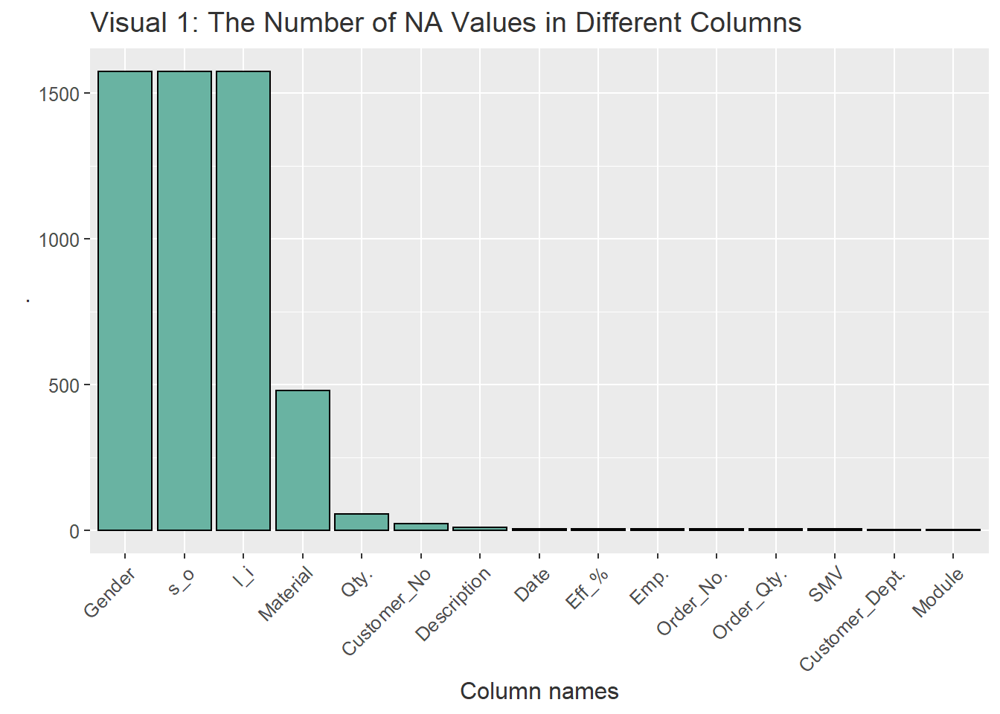
It looks like certain customers have a lot of null values. These are important to be treated as they can create misclassifications (Alarsan 2019). It would have been better if we are able to get a good business sense about why these observations have a null value. For example, if there are items that are considered unisex and therefore the column is blank, we could have filled the NA numbers appropriately. However, we currently do not have that luxuy. There are null values in some of the key columns such as sales order and line item too.
It appears that there are quite a number of null values. Gender, S_O and L_I have equal number of null values indicating that there could be some pattern to the null values.At the same time Gender, S_O and L_I are very important categorical columns for our model. The rows with null values are arround 12% of the total number of observations. Therefore we decide to drop them.
full<-full_df%>%
filter(Gender !="NA")
sapply(full, function(x)sum(is.na(x)))## Module Material Customer_No Description Customer_Dept. Gender s_o l_i
## 0 0 0 0 0 0 0 0
## Order_No. Order_Qty. Emp. SMV Date Eff_% Qty.
## 0 0 0 0 0 0 13Now there are only 13 observations that are NA. These appear in the Qty column which is our Y variable. Out of over 12,000 observations this is a negligible number. so we can substitute it with the mean of the column.
full$Qty.<-ifelse(is.na(full$Qty.),mean(full$Qty.,na.rm = T),full$Qty.)
sapply(full, function(x)sum(is.na(x)))## Module Material Customer_No Description Customer_Dept. Gender s_o l_i
## 0 0 0 0 0 0 0 0
## Order_No. Order_Qty. Emp. SMV Date Eff_% Qty.
## 0 0 0 0 0 0 0Now we can see that there are no records with NA values.
Normalization may be required in the data if the data is required if the data is highly skewed and include a number of outliers (Al Shalabi et al.,2006). Whe outliers are identified the best way to deal with them is to get the business knowledge about how they happened. However, that luxury is not there for us. we can examine the outliers and treat them statistically if required.
ggplot(full, aes(Qty.))+
geom_density()+
ggtitle("Visual 2: The Distribution of the Qty. column")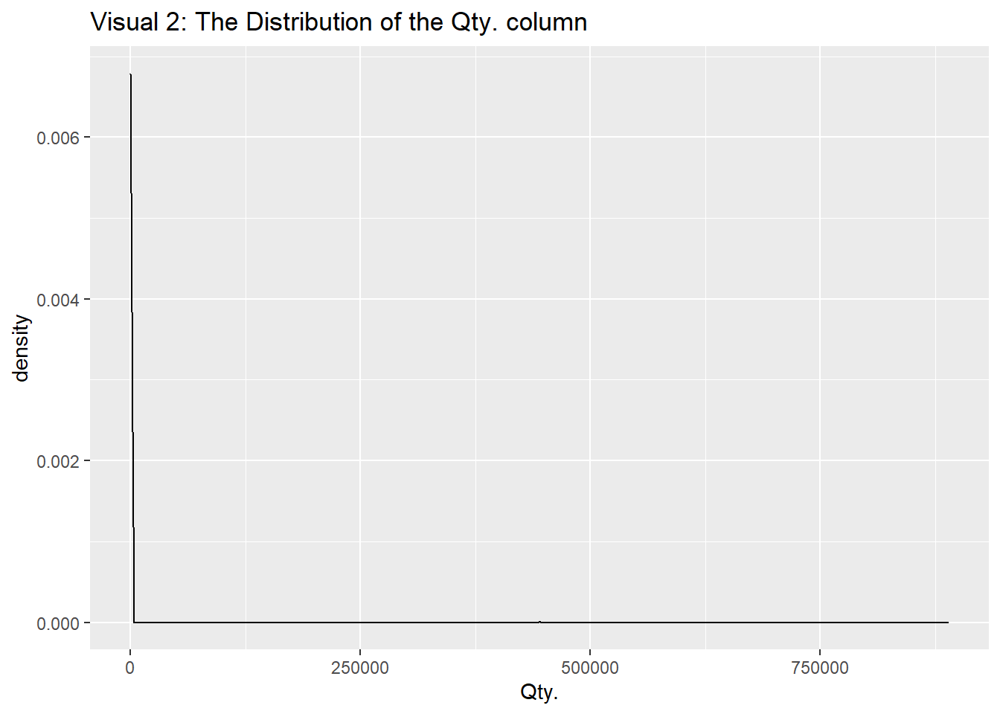
ggplot(full, aes(Gender,Qty.))+
geom_boxplot(alpha=0.0)+
geom_jitter(alpha=0.2, fill="#69b3a2")+
ggtitle("Visual 3: Boxplots by the Gender")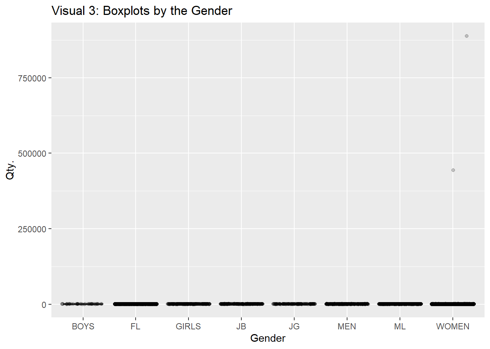
Here we can see that there are a number of genders recorded. It is weird to come across this number of gernders. However, we are not able to exactly identify what each abbreviations stand for. We also can see that the density chart of the Qty. column is extremely skewed and contains a number of outliers that we can hardly even see a distribution. The same is seen when we plot the box plots by gender. Running a model on untreated data like this would result in biased measures. Also, depending on the algorithm we choose, the model will be highly affected by outliers which is something data scientists try to avoid at all costs. In order to treat this extreme condition, we will normalize the Y variable in 2 ways.
sum(ifelse(full$Qty.>quantile(full$Qty.,0.999),1,0))## [1] 13# we have 13 observations at 99.9 percentile
full$Qty.<-ifelse(full$Qty.>quantile(full$Qty.,0.999),quantile(full$Qty.,0.995),full$Qty.)
full$Qty.<-ifelse(full$Qty.<quantile(full$Qty.,0.001),quantile(full$Qty.,0.001),full$Qty.)
full$log_qty<-log(ifelse(full$Qty.==0,0.1,full$Qty.))ggplot(full, aes(log_qty))+
geom_density(fill="#69b3a2", alpha=0.8)+
ggtitle("Visual 4: The Distribution of the Quantity after Treatment")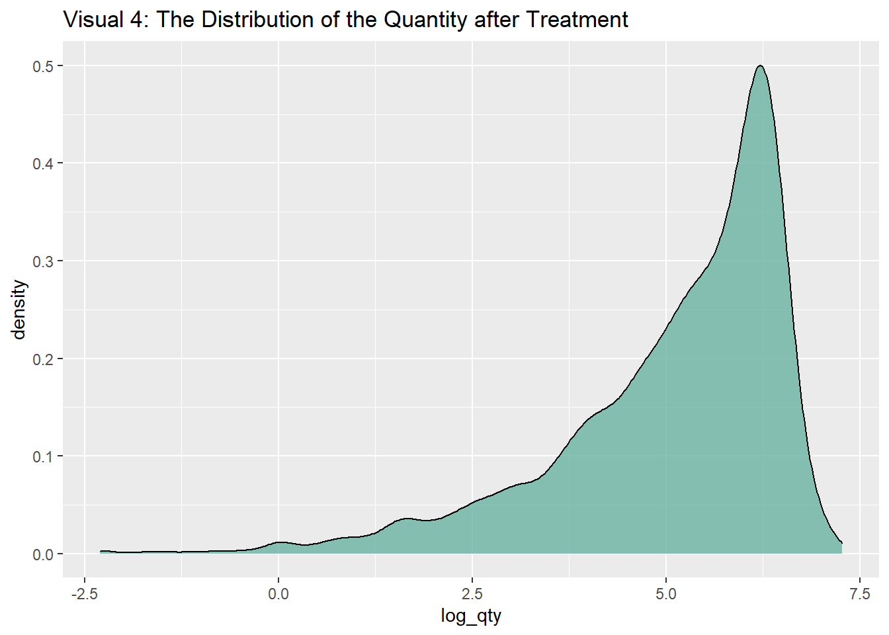
Converting the variable into log largely has solved our problem. The distribution is not entirely a normally distributed one. But a Y variable like this is more parsimonious for running a model. We can see that compared to the graph we saw earlier, this is a much better representation of our Y variable. Since the Qty column actually has 0 values, we will first convert the 0 values to 0.1 in order to be compatible to convert to log.
ggplot(full, aes(Gender,log(Qty.)))+
geom_boxplot(alpha=0.0)+
geom_jitter(alpha=0.2, fill="#69b3a2")+
ggtitle("Visual 5: Boxplots by the Gender post Treatment")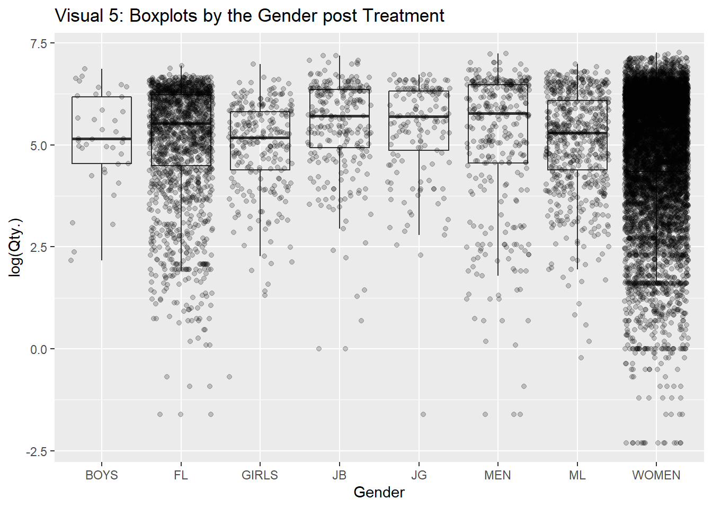
The above figure is a boxplot by the Gender. I have plotted the individual data points converted to log placed on top. This shows that now the data distribution follows a very normal pattern. It also shows how the data is allocated for different genders.
We will treat the outliers by getting the extreme 2% of data back to 98th percentile.
full$Qty.<-ifelse(full$Qty.>quantile(full$Qty.,0.98),quantile(full$Qty.,0.98),full$Qty.)
full$`Eff_%` <- ifelse(full$`Eff_%`>quantile(full$`Eff_%`,0.98),quantile(full$`Eff_%`,0.98),full$`Eff_%`)
full$Order_Qty.<-ifelse(full$Order_Qty.>quantile(full$Order_Qty.,0.98),quantile(full$Order_Qty.,0.98),full$Order_Qty.)
# create the melted dataset again
tidy<-full[c("SMV","Order_Qty.","Eff_%","Qty.")]%>%gather("numeric_col","value",1:4)
# visualize the numeric variables after treatment
ggplot(tidy, aes(x=value)) +
geom_density(fill="#BF87B3", alpha=0.8)+
facet_wrap(numeric_col ~ ., scales="free")+
labs(title = "Visualisation : ",
subtitle = "Distribution of the numeric variables after outlier treatment")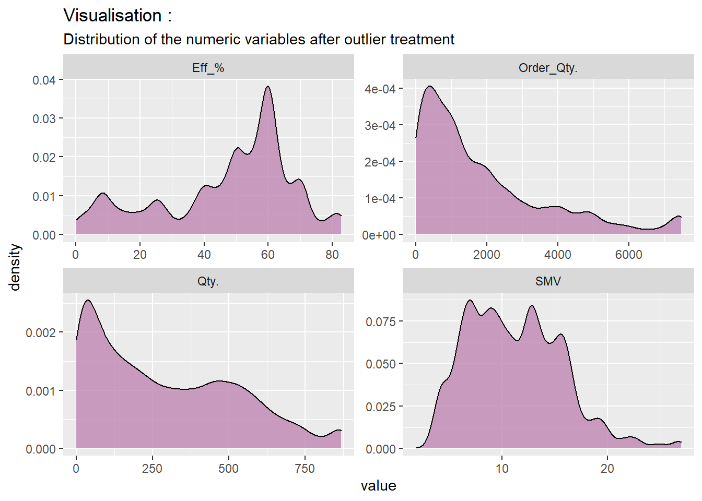
we need to decide what columns to use for our model and which columns qualify as good categorical variables. Categorical variables with too many levels will create a dimentiality problem (Seger 2018). lets examine the number of levels in each categorical column.
# length(unique(full$Module))
sapply(full[columns_c], function(x)length(unique(x)))%>%data.frame()%>%mutate(col_names = columns_c)%>%
ggplot(aes(x=reorder(col_names,-.),., label = .))+
geom_bar(stat = "identity", fill = "#69b3a2",color="black")+
labs(title = "Visual 6: The Number of levels in the Categorical Columns",
x = "Column names")+
geom_text(size = 3, position = position_dodge(width = 1),vjust = -0.5, size = 2)+
theme(axis.text.x = element_text(angle = 45, hjust = 1))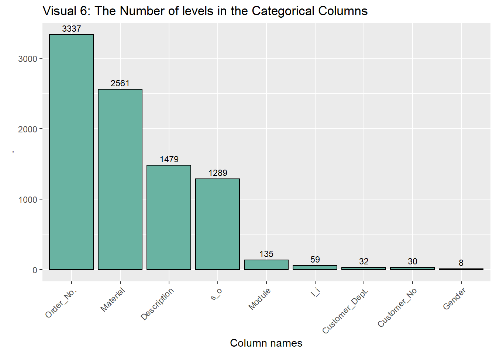
This shows that if we were to create dummy variables to all the categorical columns, we will be stuck in a dimentionality problem. However, this says that for the period considered, we have processed 3337 different orders, used 2561 different materials and so on. The above chart gives us a number of insights in that regard. We will also look at the categorical variables that have a high number of levels and the number count of them.
The Description column has a very high number of unique entries. The column cannot be used to run a model in its raw form. In order to be able to use the column, we need to transform the column into a smaller dimention. Lets look at the description and what sort of descriptions are there in the top 20 descriptions. We can decide if we want to further do a feature engineering on our data based on the results.
# length(unique(full$Module))
full%>%
group_by(Description)%>%
summarize(counts=n())%>%
arrange(desc(counts))%>%
select(Description,counts)%>%
top_n(20)## `summarise()` ungrouping output (override with `.groups` argument)## Selecting by counts## # A tibble: 20 x 2
## Description counts
## <chr> <int>
## 1 SUB_CK LOW RISE TRUNK 3PK XWN 181
## 2 (CO)AE KARIMA CUT OUT OP-SD-SS18 108
## 3 NORTH SHORE TOP SD 102
## 4 AE STRAPPY BACK ONE PC BASIC SD SS18 94
## 5 (CO/DL/PIN)AE ONE PIECE SMOCKED SD-SS18 78
## 6 MAGIC IN THE AIR TOP SD 75
## 7 (CO/MC)AE LIGHTLY LINED MACM-TP-SD-SS18 71
## 8 (CO) AE BP CUT OUT OP-PR-SS18 70
## 9 CROSSING PATH ONE PIECE SD 69
## 10 163108 C-CROS HIWAIST BIKINI 2ZUO SD VSS 56
## 11 PKBKNI 17165 RUCHD MINI BIKI 2ZUO SD VSS 56
## 12 STEADY ROCKIN BOTTOM PR 56
## 13 (CPP/F)GRAPHIC FLAIR MIX W 54
## 14 E ESS END+ LSUT AF BLACKFL 54
## 15 EASY BREEZY BOTTOM PR 53
## 16 P SPORTS LOGO MDLT AF BLACK/PINKFL 53
## 17 STEADY ROCKIN TOP PR 53
## 18 E END+ MEDALIST 1PC AF BLK(AF)FL 52
## 19 P GALA LOGO TSRP MSBK JF BLACK/PINKJG 52
## 20 (DL/MC/PIN)AE CB MCRM DBL LND OP-PR-SS18 51It is clear that certain names stand out such as “BIKINI”,“TOP”,"“BOTTOM,”SPORTS“,”SD“. We will create a feature to recognize these patterns. What we will do is if the word”BIKINI" appears in the description, the new column, “description_feature” will carry “bikini”. We will do this to all the salient words we came across here. However, this feature could correlate with the “Gender” column, but we will nevertheless have this feature.
# length(unique(full$Module))
full<-full%>%
mutate(description_feature=ifelse(grepl("BIKINI",Description),"bikini",ifelse(grepl("TOP",Description),"top",ifelse(grepl("BOTTOM",Description),"bottom",ifelse(grepl("SPORTS",Description),"sports",ifelse(grepl("SD",Description),"sd","other"))))))
table(full$description_feature)%>%data.frame()%>%
ggplot(aes(x=reorder(Var1,-Freq),Freq, label = Freq))+
geom_bar(stat = "identity", fill = "#FF9933",color="black")+
labs(title = "Visual 7: The counts in newly created description column",
x = "Column names")+
geom_text(size = 3, position = position_dodge(width = 1),vjust = -0.5, size = 2)+
theme(axis.text.x = element_text(angle = 45, hjust = 1))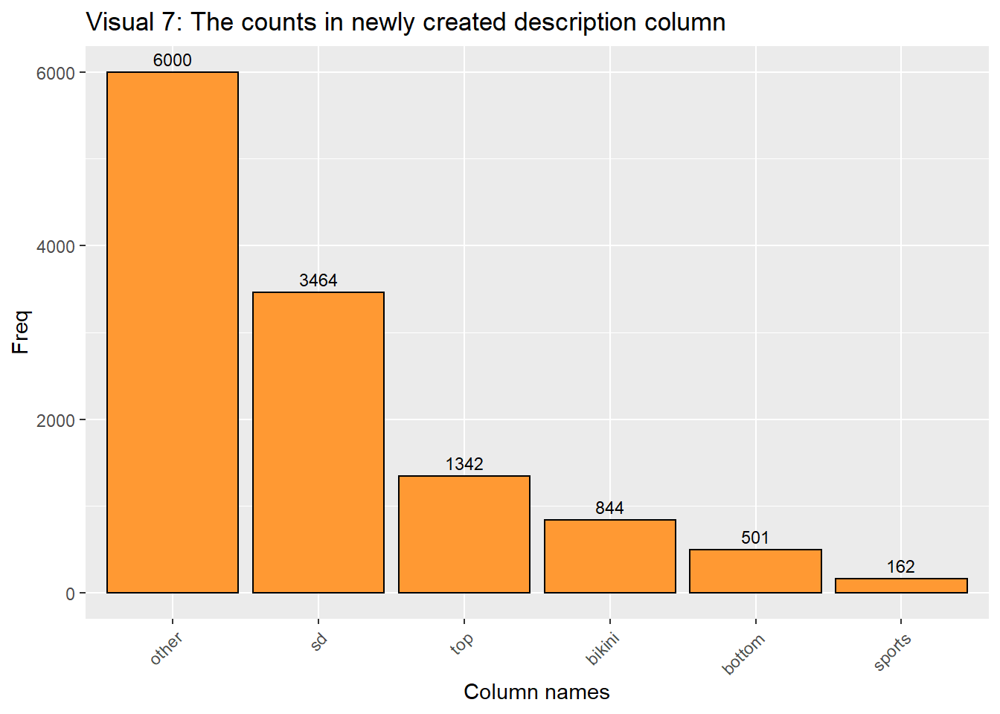
we will look at the like item column too in order to create a more meaningful column.
# length(unique(full$Module))
full%>%
group_by(l_i)%>%
summarize(counts=n())%>%
ungroup()%>%
mutate(`total observations` = sum(counts),
percentage = (counts/`total observations`)*100)%>%
arrange(desc(counts))%>%
select(l_i,percentage)%>%
top_n(10)## # A tibble: 10 x 2
## l_i percentage
## <chr> <dbl>
## 1 10 41.6
## 2 20 17.7
## 3 30 9.26
## 4 40 5.90
## 5 50 4.39
## 6 60 2.80
## 7 70 2.54
## 8 100 2.13
## 9 80 1.92
## 10 120 1.67In the line item (l_i) column it is clear that 41% of observations belong to a certain line item. The top 5 line items contribute to arround 75% of the line items. Therefore it makes a lot of sense to create a new feature here to identify the major line items. Here, we will create a seperate feature to identify the top 5 characteristics in the line item column.
full<-full%>%mutate(line_item2 = ifelse(l_i=="10","10",ifelse(l_i=="20","20",ifelse(l_i=="30","30",ifelse(l_i=="40","40",ifelse(l_i=="50","50","other"))))))The date variable as it is does not help us to run a regression. We need to at least extract the day of the week in order to run a proper analysis. We will go ahead and extract the date.
full<-full%>%mutate(day_of_week = weekdays(Date))
table(full$day_of_week)%>%data.frame()%>%
ggplot(aes(x=reorder(Var1,-Freq),Freq, label = Freq))+
geom_bar(stat = "identity", fill = "#FF9933",color="black")+
labs(title = "Visual 8: The counts of Weekdays",
x = "Column names")+
geom_text(size = 3, position = position_dodge(width = 1),vjust = -0.5, size = 2)+
theme(axis.text.x = element_text(angle = 45, hjust = 1))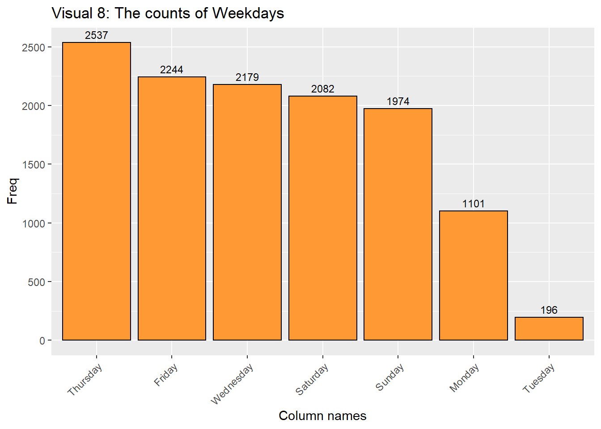
Now that we have created a complete cleaned dataset, we will move on to splitting training and testing datasets. The purpose of creating training and test datasets is that we want to make sure the predictions we are generating are well generalized (Goodfellow et al., 2016). The prediction results on the test datset shows whether the model is overfitting or not. A general practice is to allocate 20-10% of the dataset for testing purpose. Since we have 12,313 records at our disposal, we will plit the dataset as 15% testing and 85% training.
train_ind <- sample(seq_len(nrow(full)), size = nrow(full)*0.15)
test <- full[train_ind, ]
train <- full[-train_ind, ]We have divided our dataset into 2 parts. The training dataset has 10467 observations and the testing dataset has 1846 data points.
As our initial step, we will train a linear model on our training dataset. This is a good initial step before running more complex algorithms. This gives a number of insights into the variables too.
linear_model<-lm(log_qty~Order_Qty.+SMV+`Eff_%`+description_feature+line_item2+day_of_week,data=train)
summary(linear_model)##
## Call:
## lm(formula = log_qty ~ Order_Qty. + SMV + `Eff_%` + description_feature +
## line_item2 + day_of_week, data = train)
##
## Residuals:
## Min 1Q Median 3Q Max
## -7.9449 -0.4159 0.2549 0.7004 3.1272
##
## Coefficients:
## Estimate Std. Error t value Pr(>|t|)
## (Intercept) 3.031e+00 5.888e-02 51.485 < 2e-16 ***
## Order_Qty. 1.981e-04 6.256e-06 31.664 < 2e-16 ***
## SMV -2.052e-02 2.507e-03 -8.186 3.01e-16 ***
## `Eff_%` 3.835e-02 5.562e-04 68.951 < 2e-16 ***
## description_featurebottom -5.505e-02 6.746e-02 -0.816 0.41448
## description_featureother 1.206e-01 4.514e-02 2.672 0.00754 **
## description_featuresd 1.731e-01 4.667e-02 3.708 0.00021 ***
## description_featuresports -2.283e-01 1.039e-01 -2.198 0.02800 *
## description_featuretop 1.152e-01 5.385e-02 2.139 0.03249 *
## line_item220 3.110e-03 3.001e-02 0.104 0.91746
## line_item230 8.595e-03 3.795e-02 0.226 0.82083
## line_item240 3.095e-02 4.671e-02 0.662 0.50767
## line_item250 -1.662e-01 5.285e-02 -3.145 0.00166 **
## line_item2other -2.562e-01 2.990e-02 -8.569 < 2e-16 ***
## day_of_weekMonday 7.768e-02 4.265e-02 1.821 0.06857 .
## day_of_weekSaturday 5.390e-02 3.549e-02 1.519 0.12888
## day_of_weekSunday -4.132e-02 3.597e-02 -1.149 0.25061
## day_of_weekThursday 3.881e-02 3.384e-02 1.147 0.25149
## day_of_weekTuesday 2.631e-01 8.755e-02 3.005 0.00266 **
## day_of_weekWednesday 8.286e-02 3.501e-02 2.366 0.01798 *
## ---
## Signif. codes: 0 '***' 0.001 '**' 0.01 '*' 0.05 '.' 0.1 ' ' 1
##
## Residual standard error: 1.075 on 10447 degrees of freedom
## Multiple R-squared: 0.4586, Adjusted R-squared: 0.4576
## F-statistic: 465.7 on 19 and 10447 DF, p-value: < 2.2e-16We can see that we have trained a OLS regression on the training dataset. The summary() function provides important information about the model. What variables we chose, the intercept, the p values for variables and the R squared values are shown. We have a R squared value of 0.45.
We will use a collection of different algorithms in order to predict the
# run OLS regression
linear<-lm(log_qty~Order_Qty.+SMV+`Eff_%`+description_feature+line_item2+day_of_week,data=train)
linear$coefficients## (Intercept) Order_Qty. SMV `Eff_%`
## 3.0313253143 0.0001980898 -0.0205200136 0.0383468649
## description_featurebottom description_featureother description_featuresd description_featuresports
## -0.0550524527 0.1206217640 0.1730807872 -0.2282593019
## description_featuretop line_item220 line_item230 line_item240
## 0.1151672673 0.0031097439 0.0085951823 0.0309451148
## line_item250 line_item2other day_of_weekMonday day_of_weekSaturday
## -0.1662435275 -0.2561882206 0.0776809813 0.0539023228
## day_of_weekSunday day_of_weekThursday day_of_weekTuesday day_of_weekWednesday
## -0.0413226408 0.0388121337 0.2630977594 0.0828573006# run a random forest model
rf<-rpart(log_qty~Order_Qty.+SMV+`Eff_%`+description_feature+line_item2+day_of_week,data=train)
rf$variable.importance## Eff_% Order_Qty. description_feature SMV day_of_week
## 9109.148640 5613.200791 170.386176 78.945579 1.167029# run a gradient boosting model
gbm_reg<-gbm(log_qty~Order_Qty.+SMV+`Eff_%`+factor(description_feature)+factor(line_item2)+factor(day_of_week),data=train,n.trees = 1500,interaction.depth = 5)## Distribution not specified, assuming gaussian ...summary(gbm_reg)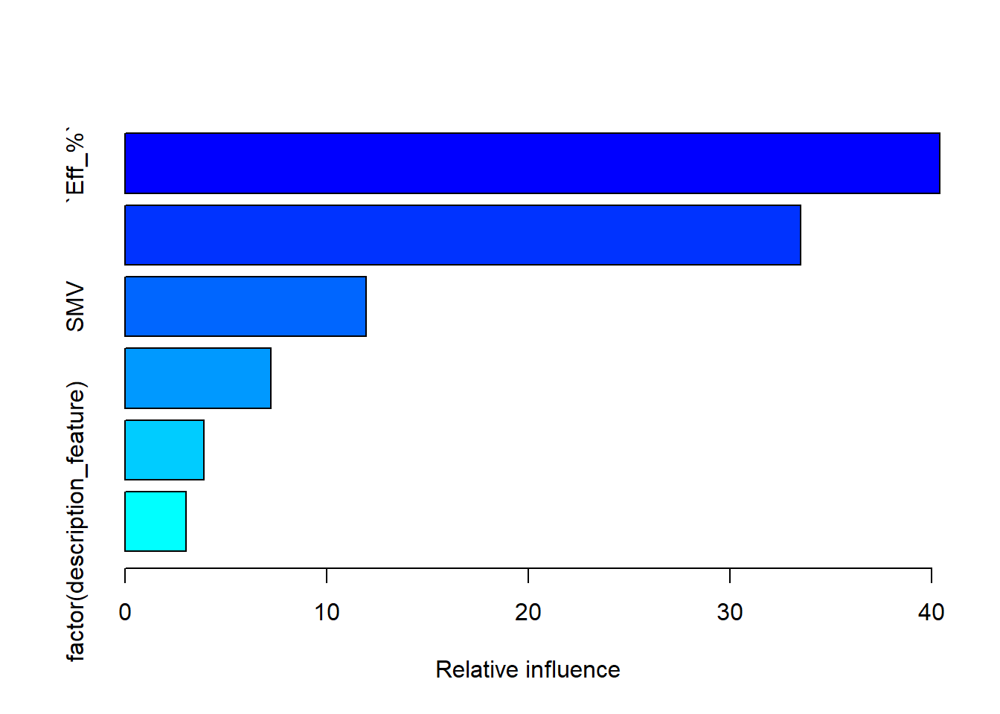
## var rel.inf
## `Eff_%` `Eff_%` 40.395220
## Order_Qty. Order_Qty. 33.498234
## SMV SMV 11.945982
## factor(day_of_week) factor(day_of_week) 7.218883
## factor(line_item2) factor(line_item2) 3.928435
## factor(description_feature) factor(description_feature) 3.013245I have run 3 different models and printed the model importance for the two ensemble models.
The first model we used is the OLS multiple regression (Tranmer et al.,2008). The idea behind this algorithm is to minimize the sum of squared residuals. In multiple regression, it tries to find a plane that minimizes the sum of squred errors. This is a more insightful method which provides you the significance of each variable, the pvalues of variables and coefficients. This algorithm can only be used for regression problems. However, this method is easily affected by outliers and also not very appropriate in modelling non-linear relationships.
The second model we have used is a random forest model (Brieman,l.2001). This is a derivation of decision tree models. The mechanism behind this algorithm is that it creates bootstrapped samples from the training dataset. Then it fits decision tree models on each of the bootstrapped samples. The final model is an average of the predictions of all the models. This is used for classification as well as regression.
Third model we have used is a gradient boosting model (Allison et al., 2013). This is also a derivation of decision tree models and it is an ensemble method. In boosting, it combines learning algorithms, typically decision trees in series in order to build a stronger model. Therefore it builds decision tree models sequentially rather than individually compared to random forest models.
I intend to use root mean squared error in order to measure the accuracy of the models. The RMSE on the test set gives us a very good understanding of the generalization error. The least model with the RMSE score will be the best model to be used. First we will predict the quantities using the three models that we have trained. It is also important to make sure we get the exponent of the result as we have taken the natural logarithm of the y variable in the training stage.
test$pred_lin<-exp(predict(linear,newdata = test))
test$pred_rf<-exp(predict(rf,newdata = test))
test$pred_gbm<-exp(predict(gbm_reg,newdata = test,n.trees = 1500,interaction.depth = 5))We will next calculate the RMSE values manually. I have visualized the accuracies visually for convenience.
sqrt(mean((test$Qty.-test$pred_lin)^2))## [1] 209.1334sqrt(mean((test$Qty.-test$pred_rf)^2))## [1] 194.3597sqrt(mean((test$Qty.-test$pred_gbm)^2))## [1] 179.3473a<-data.frame(model=c("Linear model","random forest","gradient boosting"),rmse=c(sqrt(mean((test$Qty.-test$pred_lin)^2)),
sqrt(mean((test$Qty.-test$pred_rf)^2)),
sqrt(mean((test$Qty.-test$pred_gbm)^2))))
ggplot(a, aes(model,rmse))+geom_bar(stat="identity",aes(fill=model))+labs(title="Visual 8: Model Errors (RMSE)")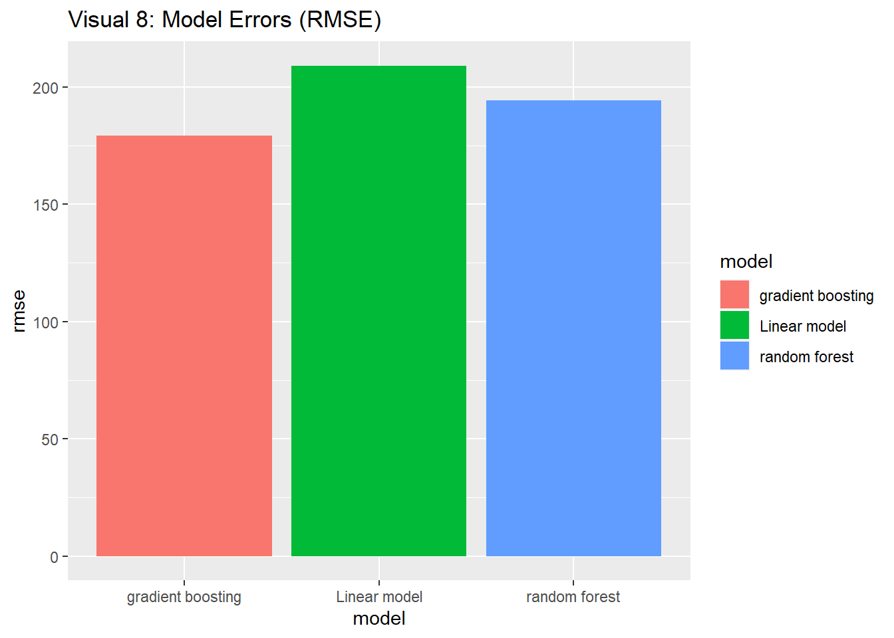
We can clearly see that the error is highest for the linear model. The random forest comes next with significantly less error. The least error was produced by the gradient boosting model. So out of the tree models we have we choose the gradient boosting model as it has the least out of sample error.
There are a number of ways to normalize data. Converting to log scale is one common way data scientists used to normalize data. There are more ways such as converting to Z score (Prihanditya,H.A.2020). For that we only need the mean and standard deviation. This time we will convert our Y variable as well as the efficiency column into a normalized scale and check results
m<-mean(full$Qty.)
sd1<-sd(full$Qty.)
# Convert our two variables into a z score
full$norm_qty<-(full$Qty.-m)/sd1
full$norm_eff<-(full$`Eff_%`-mean(full$`Eff_%`))/sd(full$`Eff_%`)
# split train-test again
test <- full[train_ind, ]
train <- full[-train_ind, ]
# train the GBM on the scaled data
set.seed(1234)
gbm_reg<-gbm(norm_qty~Order_Qty.+SMV+norm_eff+factor(description_feature)+factor(line_item2)+factor(day_of_week),data=train,n.trees = 1500,interaction.depth = 5)## Distribution not specified, assuming gaussian ...# Train the GBM on unscaled data
set.seed(1234)
gbm_reg2<-gbm(`Qty.`~Order_Qty.+SMV+`Eff_%`+factor(description_feature)+factor(line_item2)+factor(day_of_week),data=train,n.trees = 1500,interaction.depth = 5)## Distribution not specified, assuming gaussian ...# predict the scaled model
set.seed(1234)
test$gbm_norm<-predict(gbm_reg,newdata = test,n.trees = 1500,interaction.depth = 5)
# predict the unscaled model
set.seed(1234)
test$gbm_orig<-predict(gbm_reg2,newdata = test,n.trees = 1500,interaction.depth = 5)
# fix the scales to reflect real values
test$gbm_norm2<-(test$gbm_norm*sd1)+m
# error of the scaled model
sqrt(mean((test$Qty.-test$gbm_norm2)^2))## [1] 162.5731# error of the unscaled model
sqrt(mean((test$Qty.-test$gbm_orig)^2))## [1] 162.7608We will use a gradient boosting model to check how effective is the new normalization method. What we do is we are using a gradient boosting model to see if the z score converted model provides a lower amount of RMSE. Once we predict on the unseen data, we convert the scale back to real numbers and check the RMSE. Parallelly we run another model which does not contain any column with scaled values.
The observation is that the model with scaling is slightly better than the model run on the raw values. This is because the RMSE value is less in the scaled model than any other model we have run. So alternatively this method provides better results. The scaling exercise tells us that putting our data in one scale is very important and it increases the effectiveness of algorithms albeit small.
When it comes to alternative ways of model building, we have explored 3 common algorithms already. We can use other regression algorithms such as neural networks, XgBoost, KNN, decision trees etc. Therefore we have explored a good number of algorithms already.
In this whole article, I have identified a number of patterns in the dataset. Along the way we have explored the data and we have done a number of things to identify the patterns.
In addition to these, correlation plot is a good way to identify the inter-relationships between variables.
library(corrplot)
library(psych)
par(mar=c(1,1,1,1))
# corPlot(full[columns_n], cex = 0.8)
corrplot(cor(full[columns_n]), # Correlation matrix
method = c("number"), # Correlation plot method
tl.col = "black", # Labels color
bg = "white", # Background color
title = "Visual 9: Correlation plot of Numerical variables", # Main title
col = NULL,
addCoefasPercent = TRUE,
tl.cex = 0.8,
mar = c(2,0 , 3, 2),)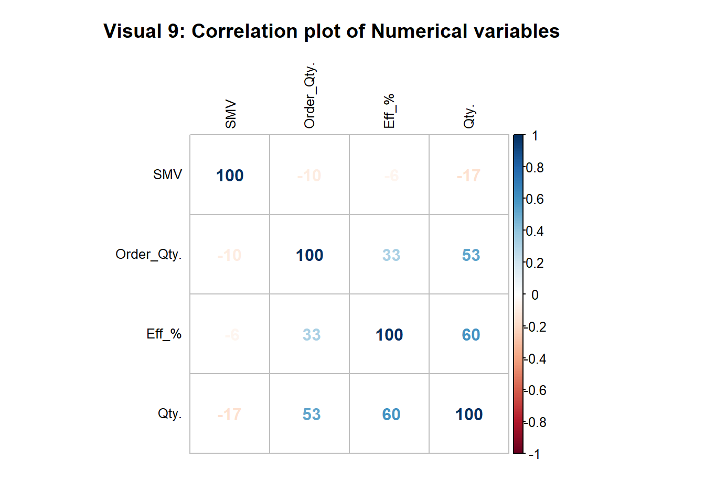
Correlation plot gives you a very detailed understanding about the interrelationship between variables. Correlation coefficient shows the degree of linear association between two variables (Taylor,R. 1990). The correlation ranging from -100 to +100 represent the strength of the correlation. It shows that Qty. and Order Qty strongly correlate with our Y variable. This becomes evident as the variables that have turned out to be the most relevant also the ones that have a high correlation with the Y variable. In fact there are no variables that have a strong negative correlation either with the Y variable or any other variable.
The first machine learning model we have used is OLS multiple regression. This was our first approach in order to develop a baseline model. This helps us to benchmark other methods too. it aims to minimize the sum of squared residuals. OLS regression provides the significance of the variables, the pvalues of variables and coefficients. This algorithm cannot be used for classification problems. One disadvantage is it is affected by outliers. Non-linear relationships cannot be properly modelled. Also often the accuracy is less compared to newer machine learning methods.
Random forest uses decision tree models as its base model. The algorithm is that it creates bootstrapped samples from the training dataset and fits decision tree models on all the bootstrapped samples. The final model puts together the predictions of all the models. This method can be used in classification as well as regression. This can accommodate non-linear relationships too. One disadvantage is that if we are not careful, the model could easily overfit.
Gradient boosting model is also a derivation of decision tree models. It is an ensemble method in that it puts together the predictions of a number of decision trees. However, the tree growth here happens sequentially rather than individually compared to random forest models. This is a very powerful algorithm used in many novel problems. Again, this has the ability to overfit if we are not careful. The method is comparatively better performing in outlier situations. GBM can accommodate non-linear relationships. GBM can also be used in classification problems. Sometimes, if you want to further improve the model, there are a number of hyperparameters you could optimize.
In our case it is very important to know our utility. We are using the model for prediction and not for explanation necessarily. Therefore a linear model is not the best model to use. A GBM is considered a black box as it is not the most transparent model. But it is very appropriate in a prediction problem. So the most appropriate model is the GBM and the random forest and a linear model is only appropriate as a baseline model to explain the data.
ggplot(full, aes(norm_qty))+
geom_density(fill="#FF9933", alpha=0.8)+
labs(title="Visual 10: Qty's z score Distribution",
x = "Z scale converted Quantity column")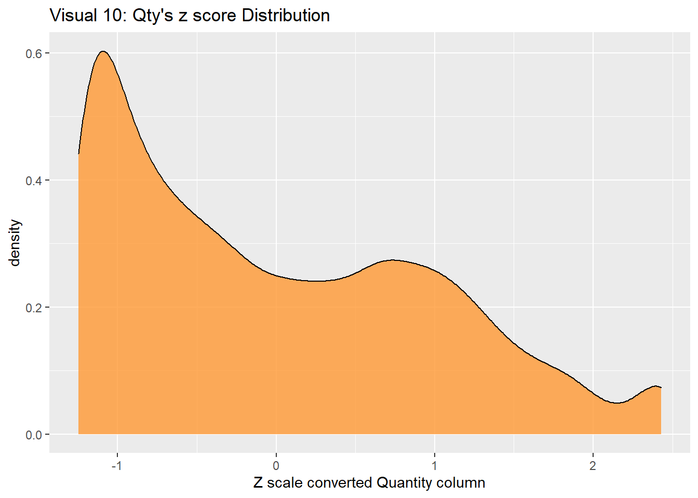
Scaling is changing the range of our data so that the machine learing models are not affected by extreme lengths of the variables. We have used two ways of scaling. First, we used natural log conversion. This is a quich method to convert your variables into a linear scale from an exponential scale. The limitation is that if you have any negative values, you are not able to convert those values into log values and needs further treatment. The second method we used was the conversion to Z score. We used mean and standard deviation of the variable to achieve that. For example, if a z score is 2 it means that the observation is 2 standard deviations away from the mean. This provided better results albeit marginally compared to log conversion. No need to treat for negative values here as it clearly captures them too. Therefore we prefer z-score conversion compared to log conversion.
First, I gained a lot of knowledge about how a data science project is run on the ground. The data is not clean all the time and it needs to do extensive data cleaning in order to get the data in an analyzable format.
It is very important to have skills in sequential data reading. Ways to not just one file read but a number of files are read in one go.
Visualizations can tell a very good story. There are a lot of information that can be conveyed through a visualization rather than a number. For example, in the outlier detection, the magnitude of the problem was very clear with the visualizations.
Scaling has the capacity to improve model performance.
Not just the powerful algorithms but the quality of the data matters.
I came across some very exceptional outliers. If I had not cleaned the outliers the model would have been strongly affected by the outliers.
Different algorithms perform differently and their utility is different. We can use an ensemble model if the task is to predict and not necessarily explain.
Alarsan, F.I. and Younes, M., 2019. Analysis and classification of heart diseases using heartbeat features and machine learning algorithms. Journal of Big Data, 6(1), pp.1-15.
Al Shalabi, L., Shaaban, Z. and Kasasbeh, B., 2006. Data mining: A preprocessing engine. Journal of Computer Science, 2(9), pp.735-739.
Breiman, L., 2001. Random forests. Machine learning, 45(1), pp.5-32.
Goodfellow, I., Bengio, Y. and Courville, A., 2016. Machine learning basics. Deep learning, 1(7), pp.98-164.
Gupta, Y., 2018. Selection of important features and predicting wine quality using machine learning techniques. Procedia Computer Science, 125, pp.305-312.
Jo, J.M., 2019. Effectiveness of normalization pre-processing of big data to the machine learning performance. The Journal of the Korea institute of electronic communication sciences, 14(3), pp.547-552.
Natekin, A. and Knoll, A., 2013. Gradient boosting machines, a tutorial. Frontiers in neurorobotics, 7, p.21.
Prihanditya, H.A., 2020. The implementation of z-score normalization and boosting techniques to increase accuracy of c4. 5 algorithm in diagnosing chronic kidney disease. Journal of Soft Computing Exploration, 1(1), pp.63-69.
Robnik-Šikonja, M., 2004, September. Improving random forests. In European conference on machine learning (pp. 359-370). Springer, Berlin, Heidelberg.
Seger, C., 2018. An investigation of categorical variable encoding techniques in machine learning: binary versus one-hot and feature hashing.
Singh, A., Thakur, N. and Sharma, A., 2016, March. A review of supervised machine learning algorithms. In 2016 3rd International Conference on Computing for Sustainable Global Development (INDIACom) (pp. 1310-1315). Ieee.
Taylor, R., 1990. Interpretation of the correlation coefficient: a basic review. Journal of diagnostic medical sonography, 6(1), pp.35-39.
Tranmer, M. and Elliot, M., 2008. Multiple linear regression. The Cathie Marsh Centre for Census and Survey Research (CCSR), 5(5), pp.1-5.